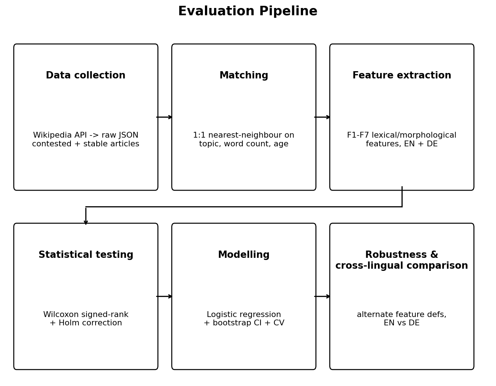
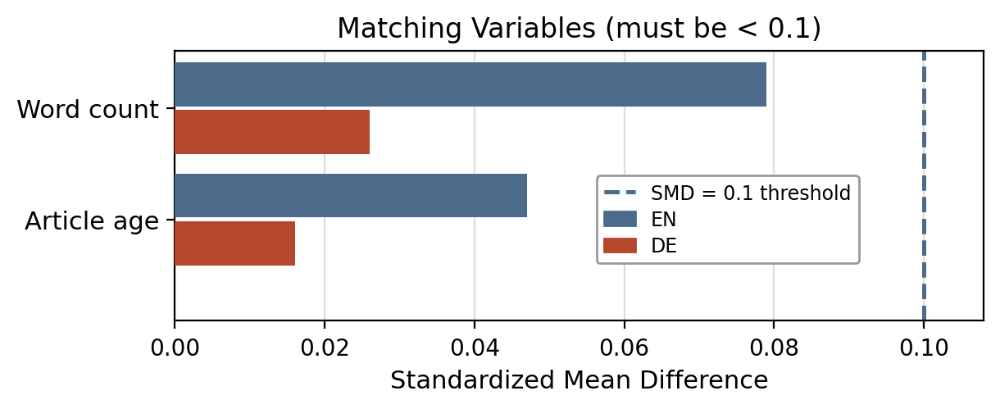
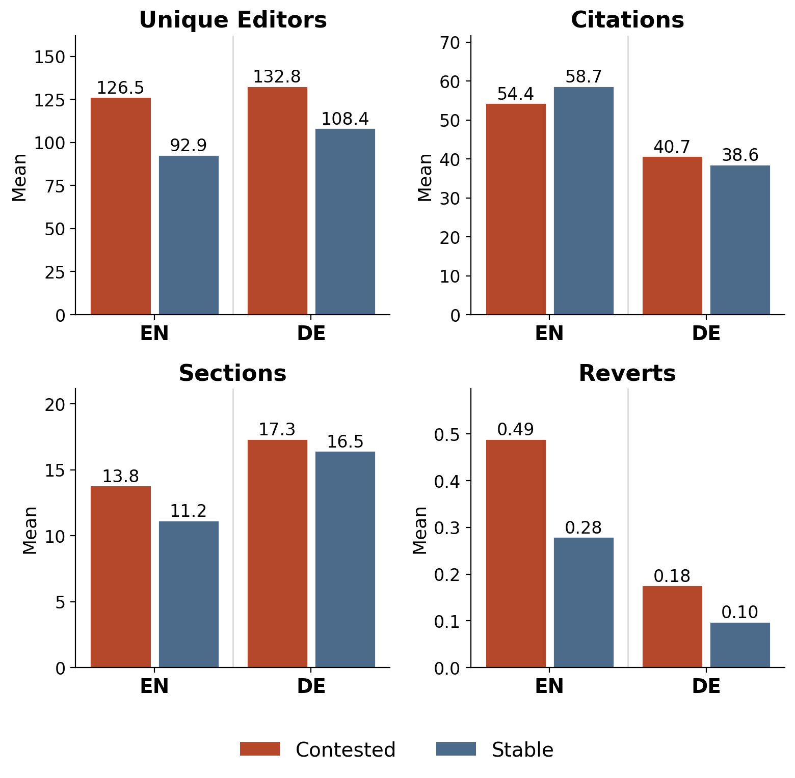

The research question
Can linguistic features of a Wikipedia article tell whether it is editorially
contested, and do the patterns differ between English and German?
Contested articles carry an active {{POV}}, {{Disputed}} or
Vorlage:Neutralität template. We compared them with stable Featured
(English) and Excellent (German) articles on the same topic, matched on word count and
article age, so that differences in topic, length or age could not explain what we found.
The approach
I built the bilingual data pipeline: querying the Wikipedia API, cleaning wikitext, scanning revision histories, and classifying topics with Wikimedia's Lift Wing outlink model. I also implemented the same-topic nearest-neighbour matching and ran a pilot of six experiments that shaped the final design. The final datasets have 143 English pairs (from 200 contested and 400 stable candidates) and 142 German pairs (from 195 contested candidates), all with a standardised mean difference below 0.1 on word count and age.
As a team we measured seven features in three groups:
- Framing: epistemic hedges (F1), affective stance (F2), verification-evading phrases (F3).
- Attribution: attribution verb bias (F4), lexical presupposition (F5).
- Discourse: contrastive transitions (F6), lexical diversity, MTLD (F7).

We tested each feature with paired Wilcoxon signed-rank tests and Holm correction, and trained a logistic regression evaluated with 5-fold cross-validation and bootstrap confidence intervals.


Results
The strongest signals were about sources: contested articles use more verification-evading phrases and more loaded attribution verbs. They also contain more affective stance markers. Hedging was not significant, and if anything slightly lower in contested articles, so editors in a dispute seem to assert rather than hedge. In German the signal was weaker, and attribution bias was the feature that held up best across both languages.
In a robustness check we re-ran the model with an alternative feature definition and a filtered subsample, and the direction and relative size of the coefficients stayed the same.

Limitations
This is an observational comparison. Matching removes the effect of topic, length and age, but it does not show that the language causes a dispute or the other way round. The samples are also modest, about 140 pairs per language. In the paper we suggest that a signal like this could help filter LLM pretraining data, which we did not test.